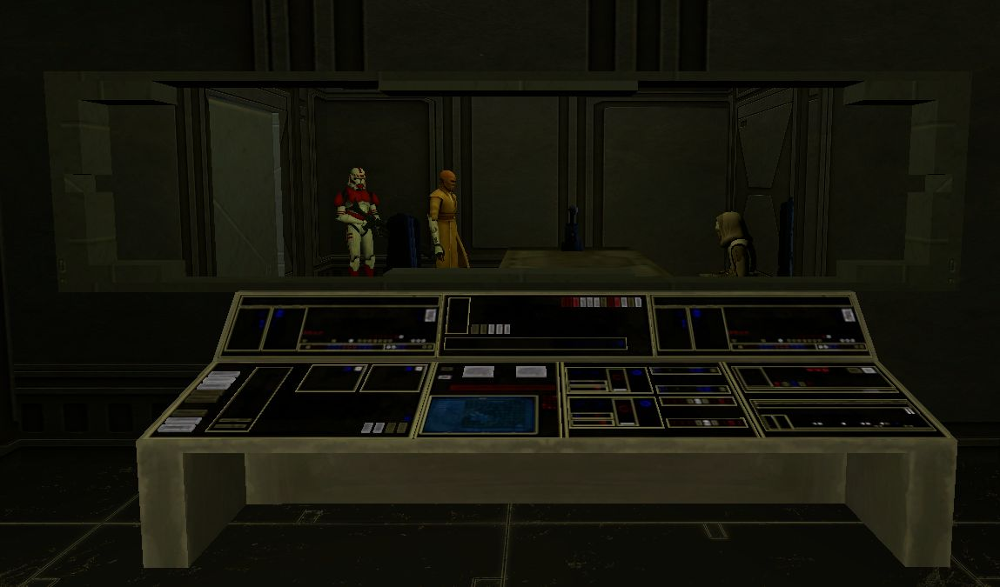

WEATHERBusiest near 11:00 KST; peak 93 aboard
The 187th Dispatch
Published for the Men and Women of the 187th Legion · Keeradak Wing · The Liberator
WEEKLY EDITION483 MEMBERS · 56 ACTIVE THIS WEEK
Vol. IX — No. 46Aboard the Liberator · WEEK ENDING THURSDAY, NOVEMBER 12, 2026FIVE CREDITS
BATTALION FIGHTS 20 ENGAGEMENTS IN WEEK
Turnout Off 12 Per Cent; 30 Troopers Took the Field
Elizabeth Led Five Operations, More Than Any Other Leader

ABOARD THE LIBERATOR, Nov. 12 — The battalion logged 20 events in the seven days ending today (20 S1 Main), along with five trainings, six basic trainings and 18 tryouts, of which eleven passed.
The largest muster was an S1 Main on Nov. 5 under Kworg, which drew five troopers by the logs' count.
Event leads this week: Elizabeth, 5; Kworg, 4; Swift | American, 3.
Trainings were run chiefly by Mace Windu | Sinn, Turnicate and Samson | Pines.
The Week in Figures
| Seven days | No. |
|---|---|
| Events | 20 (▲18%) |
| S1 Main | 20 |
| Trainings | 5 (▼29%) |
| PVE | 3 |
| PVP | 2 |
| Basic trainings | 6 |
| Tryouts (passed) | 18 (11) |
| Troopers at events | 30 (▼12%) |
| Discord messages | 1,277 (▲2%) |
| Members · active | 483 · 56 |
Server Weather
Busiest near 11:00 KST, about 44 aboard; quietest near 18:00 (16). Peak 93 on Nov. 10. Average players aboard the Liberator by hour, KST.